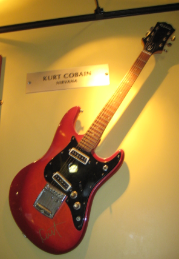
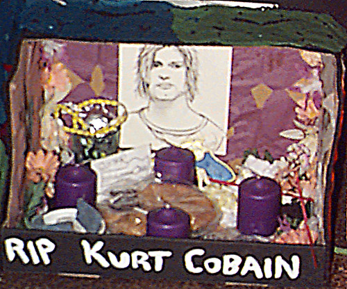
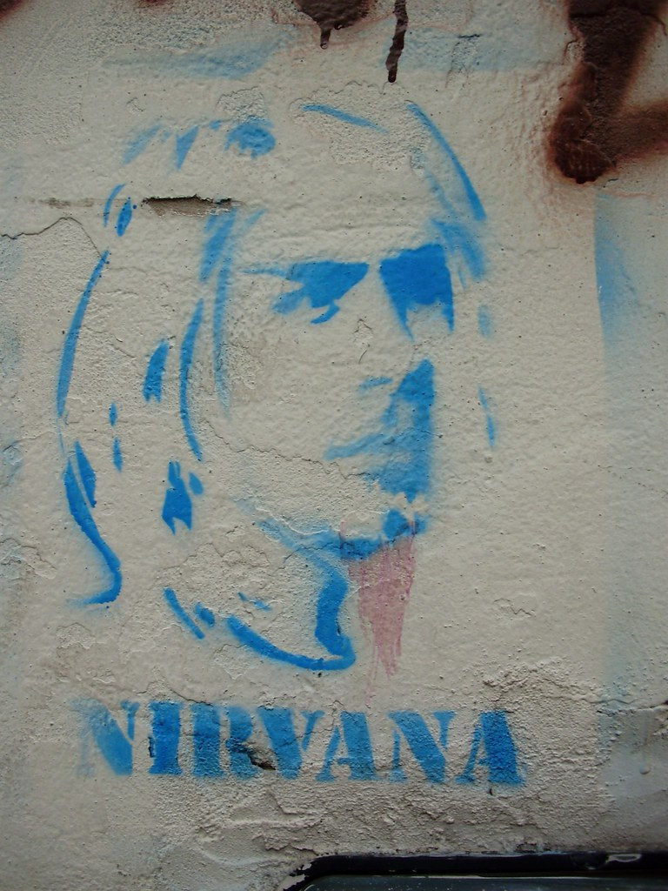
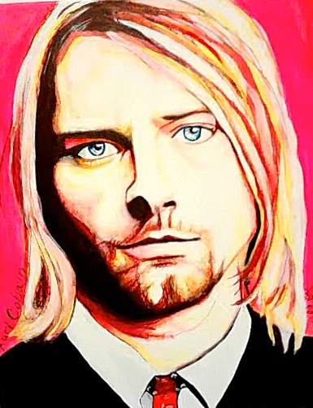

by roy.luck is licensed under CC BY 2.0.")

Quem foi Kurt Cobain??
Kurt Cobain (1967-1994) foi um cantor, compositor e músico norte-americano. Foi o fundador, vocalista e guitarrista da banda Nirvana. Viciado em drogas, morreu com apenas 27 anos de idade. Kurt Donald Cobain nasceu em Aberdee, ao sul do estado de Washington, Estados Unidos, no dia 20 de fevereiro de 1967. Era filho de um mecânico e de uma garçonete. Kurt cresceu em uma família de tradição musical, e seus tios tocavam em bandas da região. Com dois anos começou a cantar já mostrando seus dons musicais. Quando estava com sete anos, seus pais se separaram e Cobain tornou-se uma criança reclusa e rebelde. Passava a maior parte do tempo sozinho ouvindo música e pintando. Sem lugar certo para morar, vivia com o pai, com a mãe, com amigos e parentes. Duas semanas antes de se formar no ensino secundário, abandonou a escola. Apaixonado pelo rock, ao completar 14 anos ganhou de presente sua primeira guitarra elétrica e logo estava tocando e fazendo suas próprias canções. Kurt Cobain formou sua primeira banda, a “Fecal Malter”, com o baixista Dale Crover, mas em 1985 conheceu Krist Noviselic e juntos se mudaram para Olympia, atraídos pelo cenário musical da cidade.
Galeria


